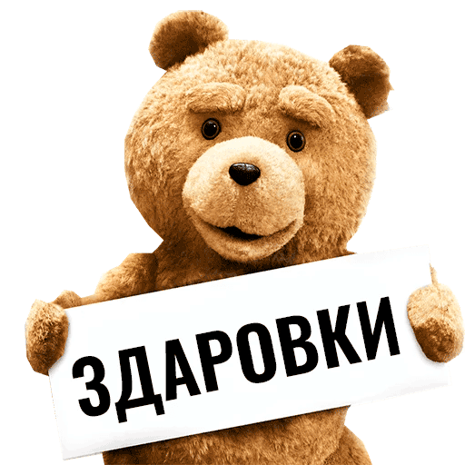
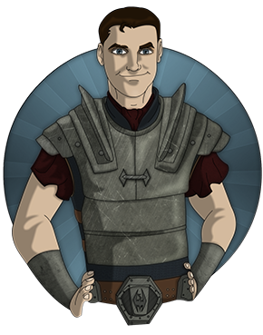
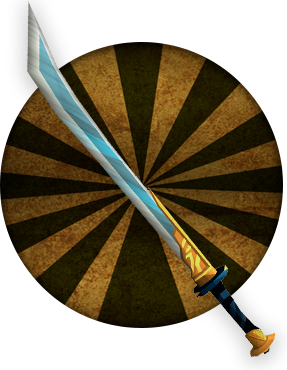
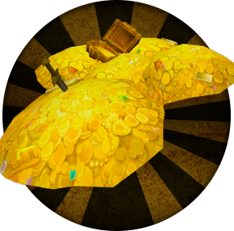

Я готов вас развлекать на своих стримах. Кстати, о них. Я стримлю каждый день, кроме первого в неделе, с 18:00 до полуночи.
Но, думаю, ты и так это знаешь. Просто напомнил ;)

В двух словах обо мне. Стримить я начал два года назад,
как раз в эпоху развтия twich. Первые стримы. первые зрители. Первые донаты.
Это было очень волнительно, но о-о-о-очень круто. Сегодня у нас уже чуть больше
тысячи и это большая радость для меня. Спасибо всем вам за то, что смотрите меня.
Мои игры
Вообще, я из тех людей, кто играет во все, что играется, а если оно не играется -
толкаю и начинаю играть :)
Но есть две игры, покорившие мое сердце. Это Lineage II и World of Warcraft. С обеими я
познакомился где-то в 10м классе с разницей плюс минус полгода. Сначала, я открыл для себя Lineage на городском сервере,
где играло около двух тысяч человек. У нас в городе было всего две площадки для игры: alkar и trifle. Поэтому игроки одного
сервера могли оказаться жителями одного района. А это дружба! Или конфликт! Короче говоря, социальная часть игры выходила за
рамки самой игры.
Lineage II
Помню первый клан, где его лидер водил меня за руку по локациям и показывал каких монстров убивать, какие ресурсы собирать,
а какие продавать. К слову, это были четвертые хроники, Scions of destiny, а я был молодым некромантом. Но даже сила тьмы не спасла меня, от гнева лидера
клана, когда огр, убивший меня стащил мои перчатки кармиана, подаренные мне кланом.
А как я обмывал свой меч валхалы, выданный мне за боевые заслуги.
Сейчас игра изменилась, но в ней все равно есть место сказке и тому старому, волнующему фентезийному миру.
Позже, я открыл для себя удивительную игру на удивительно неработоспособном сервере. Это было мое первое знакомство с WoW’ом.
К сожалению, я не застал классическую версию игры и сразу начал играть на следующем дополнении Burning Crusade. Почему-то я решил, что хочу ассоциировать себя с зеленым,
мускулистым и, немного, зубастым орком. Орком-воином. Как же учеба мешала мне тогда становится храбрым сыном Орды. Между тем, мой персонаж все глубже и глубже погружал меня
в этот сказочный и абсолютно новый мир. Все было хорошо, до тех пор, пока я не создал себе персонажа за Альянс. Человек-разбойник. Это была сто процентная ассимиляция игрока и
персонажа. Лучшим развлечением для меня стало выслеживание и преследование жертвы, прячась в тенях.
Warcraft
Информация
Обо мне:
Зовут: Виталий
Возраст: 28 лет
Живу: Днепропетровская область
Играю: Lineage II, World of Warcraft

Мой пк:
ОЗУ: 16 gb DDR4 3200
Процессор: AMD Ryzen 5 2600
Видеокарта: GeForce GTX 1660Ti
SSD: Samsung SSD 970 EVO Plus 250gb
Материнская плата: gigabyte B450 Aorus Elite

Донат
Если у вас есть желание поддержать меня копеечкой,
то всегда можно сделать это через DontationAlerts. Я буду безумно благодарен каждому! Спасибо за поддержку!

Мои цели
Летом этого года (2019) компания Blizzard обещала порадовать всех фанатов игры
World of Warcraft перезапуском классической версии игры.
Я с нетерпением жду, когда это произойдёт, чтобы поиграть в ту игру, которую
не застал. Возможно, там начнется новая история нового персонажа. К тому времени я надеюсь накопить
денег на новый микрофон для качественного погружения себя и вас в этот фентезийный мир…